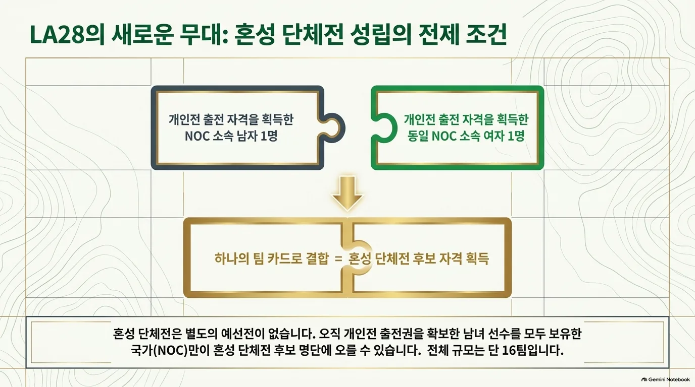

팀 선발
혼성 단체전 선발 경로
혼성 단체전에는 16개 국가 올림픽위원회(NOC)가 출전한다. 각 팀은 같은 국가 올림픽위원회(NOC)가 개인전에 엔트리한 남자 1명과 여자 1명으로 구성되며, 전체 규모는 총 32명 / 16팀이다. 개인전의 총 120명 외에 추가 선수 쿼터는 없다.
| 경로 | 쿼터 | 선발 방식 |
|---|---|---|
| (규정 D.2) OMTR | 총 16팀 내 선발 | [1] |
| (규정 D.3) 개최국 | 16팀 중 1팀 보장 | [2] |
- [1]남녀 개인전 모두에 출전 자격을 갖춘 국가 올림픽위원회(NOC)를 대상으로 한다. 2028.06.19에 남녀 최종 OGR 중 각 국가의 가장 높은 선수 순위를 사용해 OMTR을 정한다. 총 16팀의 정원 안에서 개최국 보장과 함께 적용한다.
- [2]미국에는 개인전 출전 자격을 갖춘 남자 1명·여자 1명으로 구성한 1팀을 보장한다. OMTR로 이미 확보했다면 필요 없는 개최국 자리는 다음 적격 국가 올림픽위원회(NOC)에 재배정한다. 총 참가 팀 수는 16팀이다.
팀 구성과 확정
선발된 국가 올림픽위원회(NOC)는 자국 개인전 엔트리 선수 중 남녀 각 1명을 선택한다. OMTR 산정에 사용된 최상위 선수가 반드시 실제 혼성 팀 선수가 되어야 하는 것은 아니다.
| 항목 | 규정 |
|---|---|
| 팀 출전 확인 | 2028.06.22 미국 동부시간 17:00까지 |
| 선수 이름 확정 | 6월 22일 확인 가능. 복수 적격 선수가 있으면 7월 21일 남자 3라운드 종료 후 2시간 이내 |
| 대회 | 2028.07.23–24 |


공식 근거
- IGF · LA28 Qualification System (PDF, 문서 표기 2026.01.31) — B~G
- IGF · 남자 공식 Olympic Golf Ranking
- IGF · 여자 공식 Olympic Golf Ranking
- IGF 홈페이지가 연결하는 Qualification Insights
- IGF · 예선 개시 및 OMTR 공식 설명 (2026.06.09)
- OWGR · 남자 세계랭킹
- Rolex Rankings · 여자 세계랭킹
- LPGA · 여자 세계랭킹 주간 아카이브
규정 확인일: 2026.10.01. IGF 공식 OGR 페이지가 직접 연결하는 PDF를 기준으로 정리했다. 기존 골프 페이지의 2026.05.12 표기는 해당 PDF에서 확인되지 않아 사용하지 않았다. 본 문서는 비공식 한국어 요약이며 최종 적용은 IGF 공지를 따른다.
한국 출전 전망
현재 랭킹을 LA28 규정에 단순 적용한 참고치이며 2028 확정 전망이 아님.
남자 약 2명 · 여자 3~4명 가능 범위
남자는 국가별 일반 상한 2명을 중심으로 본다. 여자 세계랭킹의 현재 수치만 적용하면 4명이며, 네 번째 선수가 15위 경계에 있어 3~4명 범위로 설명한다. 이는 통계적 예측 구간이나 최소 인원 보장이 아니다.
| 선수 | 공개 순위 | 근거 |
|---|---|---|
| 김시우 | OGR 9위 / OWGR 14위 | IGF · 2026.09.28 |
| 김주형 | OGR 17위 / OWGR 32위 | IGF · 2026.09.28 |
| 유해란 | OGR 3위 / WWGR 3위 | IGF · 2026.09.28 |
| 김효주 | OGR 4위 / WWGR 4위 | IGF · 2026.09.28 |
| 김세영 | OGR 9위 / WWGR 9위 | IGF · 2026.09.28 |
| 김민솔 | OGR 15위 / WWGR 15위 | IGF · 2026.09.28 |
남자: IGF가 연결하는 공식 랭킹 트래커의 2026.09.28 남자 60명 명단에는 김시우(9위)·김주형(17위), 한국 선수 2명이 표시된다. 김시우의 15위 이내 진입만으로 한국의 상한이 자동으로 4명이 되지는 않는다. 세 번째·네 번째 선수가 추가되려면 각각 15위 이내 조건이 필요하므로 약 2명을 참고 범위로 둔다. 트래커의 OGR 순번과 OWGR 세계순위는 서로 다르며, 이 명단은 2028년 확정 대표 명단이 아니다.
여자: 9월 28일 WWGR 및 IGF 여자 트래커에는 한국 선수 4명이 15위 이내에 있다. 현재 수치의 단순 적용 결과는 4명이다. 네 번째 선수의 순위가 16위 이하로 바뀌고 나머지 3명이 15위 안에 남는 경우에는 3명이 된다.
혼성: 남녀 개인전 출전자를 모두 확보하고 OMTR 선발 요건을 충족해야 1팀을 구성할 수 있다. 개인전 참가 가능 인원을 혼성 출전 확정으로 해석하지 않는다.
자료 기준: 2026.09.30 이전 최신 주간 자료인 2026.09.28 IGF 남녀 트래커와 WWGR 여자 주간표를 사용했다. OGR은 현재 선발 참고 순번, OWGR/WWGR은 세계순위로 구분했다. 현재 명단을 2028년 최종 선발 결과로 해석하지 않는다. 2028년 최종 랭킹·참가 자격·쿼터 수락에 따라 달라질 수 있다.